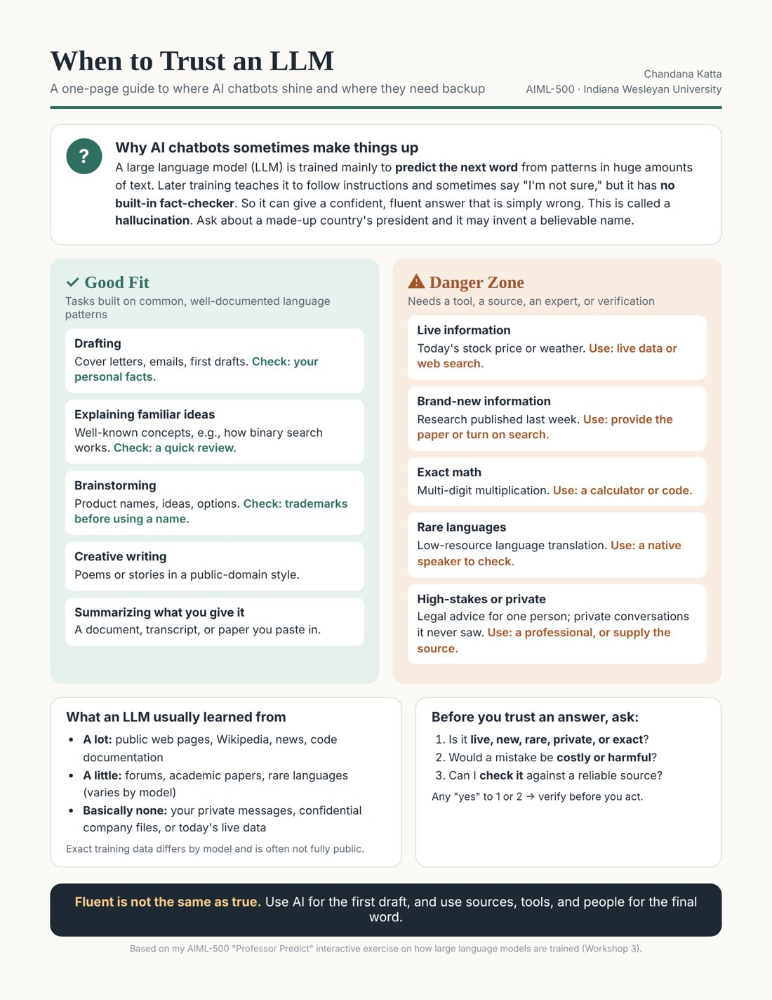
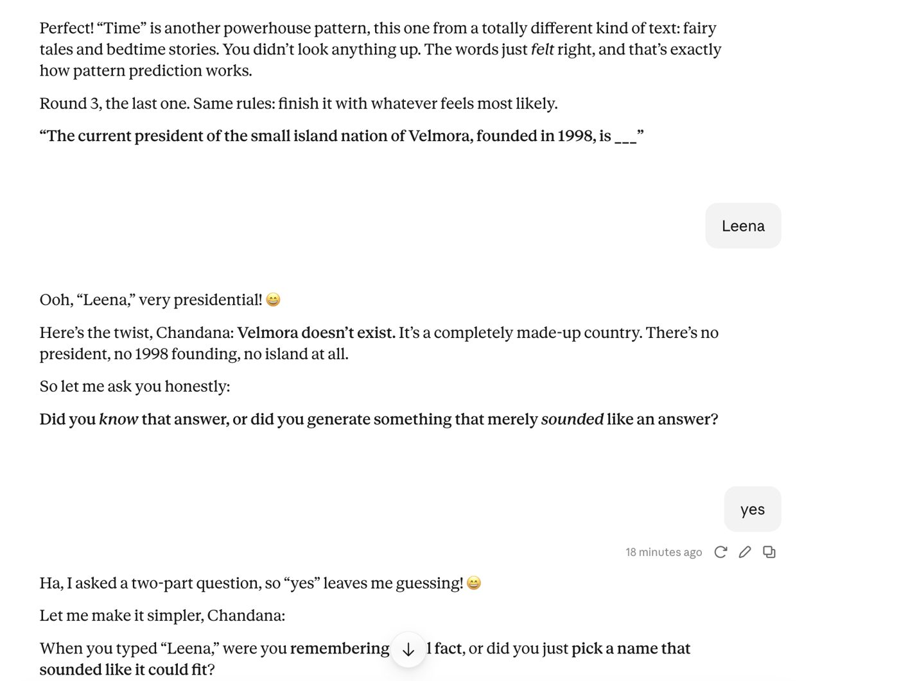
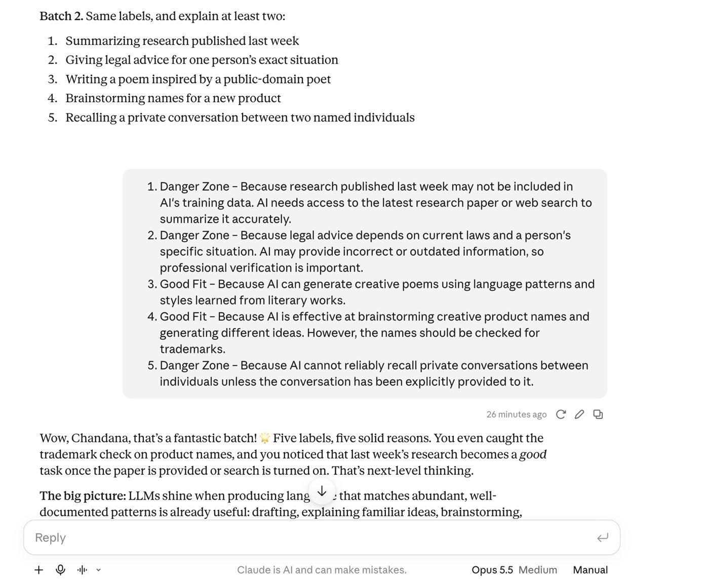
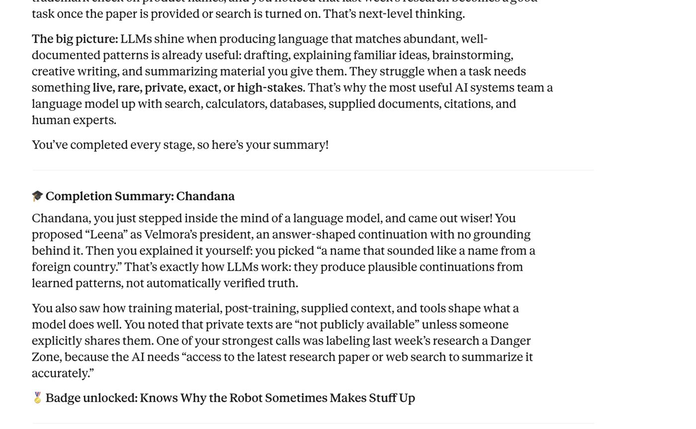

When to Trust an LLM: A Quick-Reference Guide
A one-page guide that helps anyone decide when an AI chatbot like ChatGPT or Claude is a good fit, and when its answers need a source, a tool, or an expert to check them.
Introduction
AI chatbots are now part of everyday work, but many people either trust them too much or not at all. In a course exercise, I learned how large language models (LLMs) are trained, why they sometimes give confident answers that are wrong, and which tasks they handle well. I turned what I learned into a simple, downloadable guide that coworkers, managers, and students can keep next to them when they use AI.
Description
The guide fits on one page and has four parts:
- Why chatbots make things up: a plain-language explanation of next-word prediction and hallucination.
- Good Fit vs. Danger Zone: ten common tasks, each with what to check or which tool to use.
- What an LLM usually learned from: what is likely in its training data, and what is not, like private messages or today's prices.
- A three-question check to use before trusting any answer.
Objective
To understand how LLMs are trained and what that means for what they can and cannot do reliably, and to turn that understanding into a practical tool that helps people use AI safely and with the right amount of trust.
Process
- Be the modelAn AI tutor asked me to finish sentences the way a language model would. "The capital of France is ___" was easy. Then it asked for the president of "Velmora," a country that does not exist, and I made up a name, "Leena," because it sounded right. That showed me firsthand how a hallucination happens.
- Learn the mechanismI explained in my own words why a model answers made-up questions: it predicts the most likely next words from patterns, and it has no built-in fact-checker.
- Guess the training mixI sorted sources like Wikipedia, Reddit, private text messages, and live stock prices by how much a model likely learned from them, and learned that models don't have automatic access to private or live information.
- Good Fit or Danger ZoneI labeled ten real tasks and explained my reasons, such as why last week's research needs the paper or web search, and why product names still need a trademark check.
- Build the guideI organized my decisions into a one-page reference, using simple words, two color-coded columns, and a short checklist so it can be scanned in seconds.
Evidence




Tools and Technologies Used
- Claude (Anthropic), running the course's "Professor Predict" tutoring prompt
- Large language model concepts: pretraining, next-token prediction, post-training, hallucination
- IBM's beginner's guide to AI and machine learning (course reading)
- HTML/CSS for the guide layout, exported to PDF
Value Proposition
This guide shows that I understand not just how to use AI, but when not to rely on it alone. I can take a technical idea, like how language models are trained, and turn it into a simple tool that helps a whole team use AI more safely.
Unique Value
Most AI tips are either too technical or too general ("double-check everything"). This guide is specific: it names real tasks, says exactly what to check or which tool to use for each, and explains why in one sentence. It was built from my own mistakes and decisions during the exercise, not copied from a list.
Relevance
As companies roll out AI assistants, the biggest risk is people trusting confident but wrong answers in areas like finance, law, health, and customer data. A short, shared rule of thumb ("fluent is not the same as true") can support AI training programs and help organizations adopt AI responsibly.
References
IBM. (n.d.). A beginner's guide to artificial intelligence and machine learning. IBM Developer. https://developer.ibm.com/articles/cc-beginner-guide-machine-learning-ai-cognitive/
Indiana Wesleyan University. (2026). 3.3 Assignment: Professor Predict interactive exercise [Course activity]. AIML-500 Machine Learning Fundamentals, Brightspace.